2023 年 10 月 16 日第六周总结
第 6 周可以说是我开学以来最忙的一周了，我也觉得很有意义去记录一下这一周的事情。
Presentation
重中之重当然就是 Presentation 了，要让我一个社恐在那么多人面前脱稿发言，属实是抽象。
高一时 zf 也有让做过课前演讲，当时前几个 qxr, fsy 都脱稿演讲搞得我好慌，还好后面有人开始读稿了，我也就跟着应付了。我还记得 fsy 当时还是下雨天，他湿身就开始讲了。说实话我很佩服他们。
高二时 syd 也有让弄 Presentation，而且是个人，不过呢只是简单的介绍一下好像是报纸文章什么的？最后最长的 Summary 也只是照着 PPT 念。
但这一次就不一样了，PPT 上可没有能读稿的地方。因此对我来说还是个比较大的挑战。
我负责的是 PPT 的制作及 Lead-in 与 Conclusion，同时下面的文稿也是我整理的。
直接把终稿贴在这里吧：
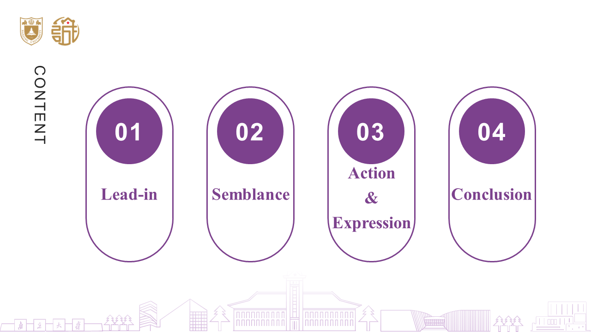
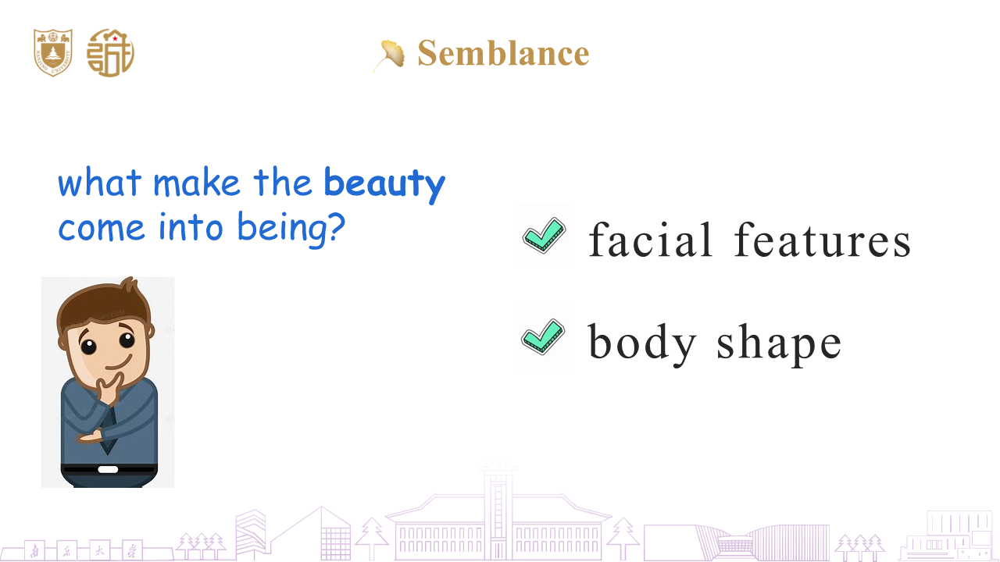
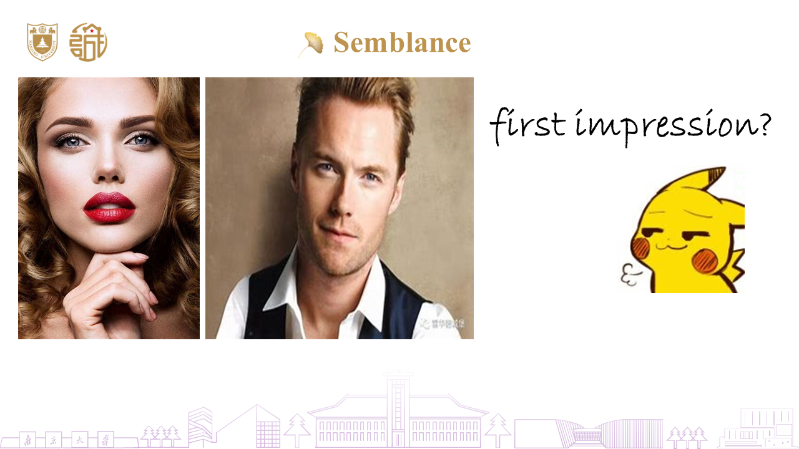
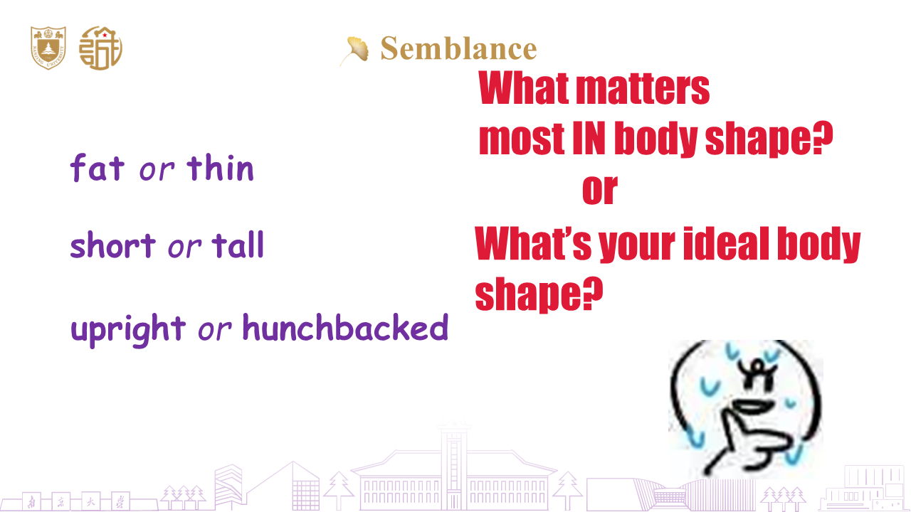
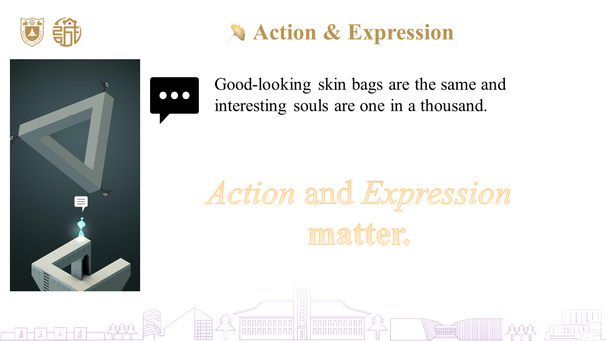
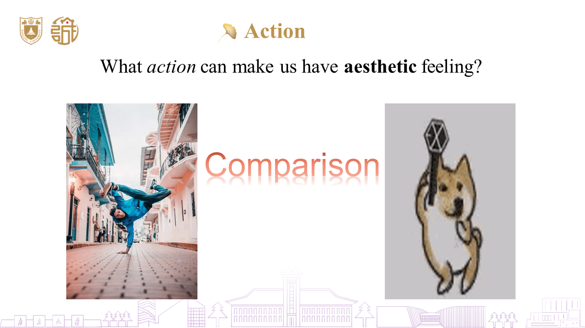
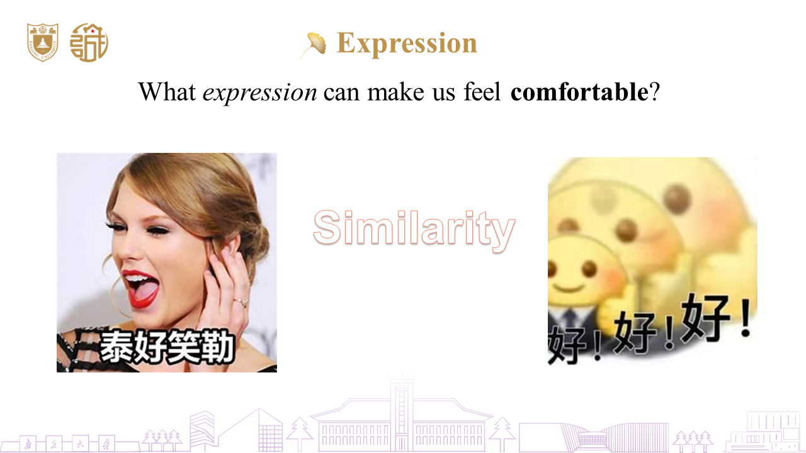
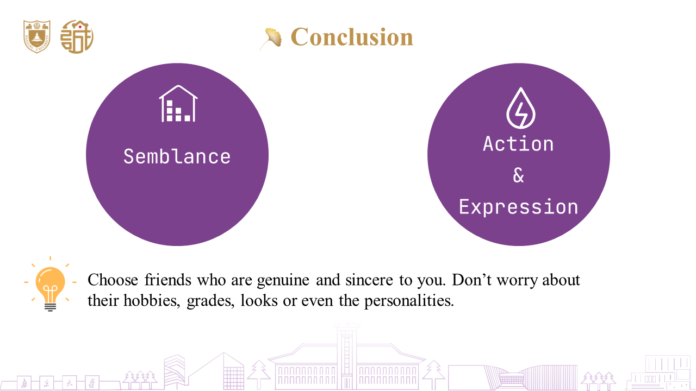
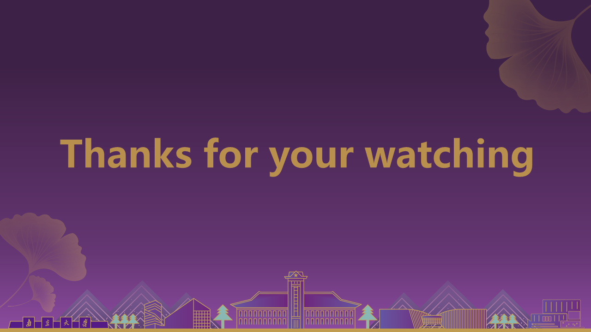
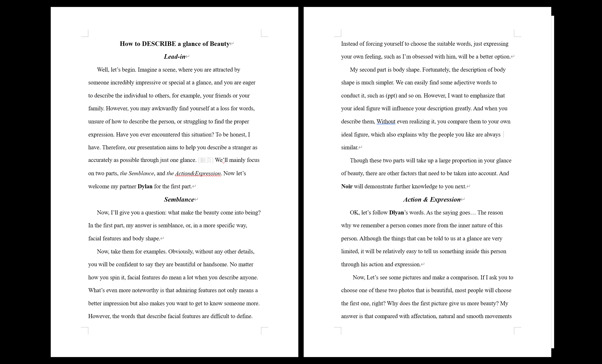
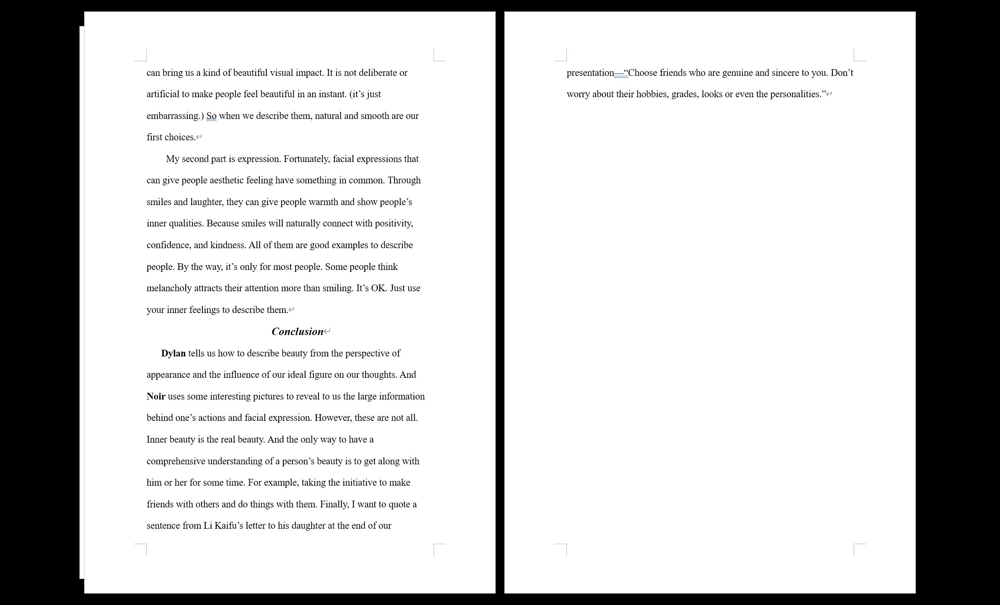
当然看完后可能会发现内容讲得似乎跟我的引入和主题关联性不大，我也知道，同时 Presentation 提问环节也被质疑了。然而为了不推倒重来，就也没指出。针对质疑我的回复就是「That's what we are going to learn in this class. And we can't filled the short presentation with too much content.」大概的话。
上次做 PPT 不知道要追溯到几年前了。然而我这次主动请缨做 PPT，一是我对自己的审美还是有自信的，我担心交给别人做会出现标点空格的格式问题，到时候我还是会无法容忍然后自己改动，还不如一开始就我来做。二是这样我就能顺理成章地负责开头结尾，因为我觉得中间两部分蛮难搞的。
想起来了，上次做应该是高二的 Presentation。如果我没记错的话，高二时的 Presentation 我还给 syd 夸了说我的 PPT 做得好。我觉得很大程度上是因为我字体的选择和格式的把控。
跟这次的 Presentation 一样，主体选择 Times New Roman 字体，这是课文、报纸等最常用的字体，也是我觉得蛮好看的字体。我印象中高二的 Presentation 似乎只有 wll 也用了 Times New Roman。格式的问题就是标点附近的空格，我看到还是有蛮多人不注意这个问题的，今天读写课老师还专门强调了一下，估计是上次作文作业给她带来了不愉快的体验。我的组员给我的文稿也是没注意这个事情，我要自己一个一个改也得累死，还好 OCRC 写过一个轮子，虽然不一定可靠，但我试了一下，基本基本没什么问题，弄完后我人工核验了一下几乎没有需要调整的。
当然为了不过于呆板，这次的 Presentation 的中间我也用了其它字体。但我对英文字体了解不多，说实话没什么能入我法眼的。Conclusion 那里要是眼尖的话估计能看出是 JetBrains Mono 字体，一个等宽编程字体。毕竟我找不到合适字体了，就凑活凑活，也算是我一个私心。
模板我直接用了南大 120 周年校庆模板，不用过多去选择。
然后因为我 Lead-in 里有句「Imagine a scene, where you are attracted by someone incredibly impressive or special at a glance, and you are eager to describe the individual to others … Have you ever encountered this situation? To be honest, I have.」，于是老师让我描述我的经历。
蛮离谱的，我只是引入一下。而且「… I have.」原本后面有句「我甚至不知道如何描述自己，更何况描述一个陌生人了」，后面担心超时而删掉了。实际上我完全没这个经历。首先，我基本避免跟陌生人或不熟的人对视，同时我也避免跟异性对视，因此没这个经历。其次，我没有向别人主动点评其他人的习惯，最多会别人说是附和几句。对他人真正的评价一直在我心中，但从不吐露。
所以我就回应因为无法描述，我很快就忘记了。然后在 PPT 找了个图让我描述，我只好尴尬地说学了这节课我就会了，现在我还不会。我是没想到提问集火我一个开头结尾的人。
WSL
虽然说这周空闲时间大部分理应分配给 Presentation，但实际上我还是抽了一些时间去折腾 WSL。
起因大概是因为听说 在 Linux 编译速度更快，虽然我已经三年没写过 了，但我想着先把环境搭好，以后有机会再写。
主体编辑器自然是 Vim，我 Snippets 就是为 数学而弄的，不用 Vim 那我不是白折腾了？
在弄 WSL 之前，我就把我的配置文件 .vimrc 解耦了，拆分到 autoload, ftplugin, config 和 plugin 四个文件夹里，.vimrc 只 source config 文件夹的配置文件，其它的都能自行读取。
这样方便 Vark 的 vimrc 的配置，同时也方便我在不同的环境下使用不同的配置。
当然这样出了点问题我还没修，就是 JetBrains 的 easymotion 又出问题了，找个时间看看吧。
WSL 的 Vim 版本比较老，为了使用 Copilot，我网上找教程自己编译了。然后就是调整 vimrc 了。
起初我打算在终端用，然而我发现终端极为抽象，它无法区分 Ctrl + Key 与 Ctrl + Shift + Key，不能用 Alt + Key 及一些特定的快捷键，而这些其中很大一部分是我 vimrc 广泛使用的。
于是我打算用 GUI 版本的。
首先是编译，又是在网上四处搜罗，这边安装一个库，那边安装一个库，总算编译出一个带 GUI 的版本了。
结果发现高分屏下小得可怜，字体也不对。于是我在网上找方法调了缩放比例，安装了字体，解决了这个问题。这时候虽然 GUI 周围还是有一圈白框，但我也只能勉强接受了。
结果我发现，不能用 Windows 的输入法。最后只能含泪放弃了 GUI 方案，回到终端方案。
终端方案那总得解决快捷键的问题吧，也不是不能解决，只是方案没那么好。
参考了 How to have different escapes for Ctrl+key and Ctrl+Shift+key。
使用 cat 指令查看键码。
1 | map <Esc>q <A-q> |
发现 Alt + Letter 键码是 ^[Letter（^[ 是 Esc），于是我就这样映射了一下。
1 | imap <Esc>[24;3~ <A-F12> |
UltiSnips 用的 CapsLock 映射的是 Alt + F12，也成功找到对应键码。
但 Ctrl + Shift + Key 我实在找不到好方法，只好改 Windows Terminal 的配置文件了：
1 | { |
\u001b 也是 Esc，[lyieu;l~ 是我弄的，不可能有键重合，然后再加上 vimrc 的配置：
map <Esc>[lyieu;l~ <C-w>> |
一开始我想过这样设置：
1 | map <Esc>[lyieu;l~ <C-S-l> |
结果发现用不了，又弄了很长一段时间都无法实现，只好直接拼接上去，没那么直观了。
还有一些奇奇怪怪的键也是类似的操作，我目前还没加全，可能有遗漏，下面是部分例子。
1 | { |
但这带来的结果是 Esc 用不了了。我只好为一些模式加了 Ctrl + C 的快捷键代替。
我不懂终端，但我感觉就是这个键的识别是相当的抽象啊，实在是太折磨人了！！！
这还没完，我还要解决 Vim.ahk 对 WSL Vim 的支持问题。
CapsLock 好解决，我改了 titlestring，更方便识别，只需稍微改下 #HotIf 就好了。
难点是 jk 的映射，因为 Esc 被作为前缀键而有了延迟，因此单独的键给我禁用了。而原 jk 就是用的 Esc，我只好再单独映射一个键取代 Esc。
随之而来的问题是，终端里的 Vim 切换模式不会自动改输入法。这点 gVim 就相当智能，我在 Insert 模式时中文，进入 Normal 模式后自动帮我改成英文，进入 Replace 模式又自动改为中文，之前一直没发现，只是用着，直到用了终端 Vim 进入 Normal 不自动改英文才发现这个功能是「你甚至不知道你需要它」的功能。同时在 Normal 模式改英文，再回到 Insert 后就也是英文了。对中文输入极其不友好。
这点也是有广泛的讨论的，据我所知是没什么好的解决方案，我也只好忍了，markdown 还是在 Windows gVim 写。
除此之外 jk 必须单独使用，否则前面的字母也会上屏。而这点 gVim 是不会的，用起来相当爽。
在 gVim 中，输入候选框有多个字母后，按 Esc 全部字母会消失。但在终端中，全部字母会上屏，甚至包括分词的 '。这也导致了无论怎么解决，都是十分不爽的，
除了这个问题，折腾过程中还发现一些方法进入 Normal 模式后会保留一个 j（抑或是 k，记不清了）。
然后我刚刚开了下 WSL 测试，完全的失败，退出是退出了，但 jk 留住了，有时候还进了 Command 模式。
先这样吧。
CPL 课上继续写。
还有一点是 Copilot，WSL Vim 上 Copilot 得重新 setup，但是屡屡失败，最后在 Issue - Copilot setup stuck on authenticate WSL Fedora 发现可能是代理的问题，关掉代理就可以了。
然后有时候 shutdown 后再打开也会让我重新 setup。现在写数学笔记已经离不开 Copilot 了，昨天补的数学笔记的证明很多就是 Copilot 辅助的。
AutoHotkey
这周没有折腾 AHK，但我有新的想法了。
首先是 Vark 想重写了。其实这个想法很早以前就有了，但迟迟没动手。而前段时间又将 Vark 移出了 Startup，我的第二大项目沦落到这种地步，实在让人潸然泪下。
实际上我认为 Vark 的前景是非常好的，也许改进一下会更好用。
再然后是 CapsLock，这类项目有很多，将 CapsLock 进行改造。
目前 CapsLock 的改造只局限于 Vim 中 UltiSnips 的快捷键，而实际上 CapsLock 这个键在别的地方应用场景也不多，因此我想自行改造。
这类项目有很多，成熟的有不少，比如我随手搜一下，Vonng/Capslock 之类的我以前也有所耳闻。但终究是别人写的，也许功能确实强大，但跟我磨合不够好。
目前的应用场景嘛，有遇到过在键盘打得正欢时需要移动鼠标的场景，这时候就要把手移出键盘区了。
但这有个挑战就是键盘移动较鼠标移动终是不够精准、快捷与灵活。这是一大挑战，不过我觉得可以一试。
初步打算是仿照 Vim 键位，Capslock 作为一个模式键，进入 Capslock 模式，然后 hjkl 进行移动。不过这样 webft 什么的就没什么意义了，可以额外配功能。
当然这只是基础的设想，会不会开始做还不好说呢。就比如 Vark 的 issue 开了一年多了还没去处理。不过往好处想，矩阵 Snippets 的 Feature Request 也是开了一年多才开始处理实现的，时间不是问题。
导师
周五下午去了新生导师见面会，围着一个圆角矩形的桌子聊了近 1.5h。
要说收获嘛，似有非有吧。不过听说别人的导师请他们吃饭，或者请喝奶茶什么的，有点羡慕。
然后朋导也拉了个群，让填了个问卷，这周六似乎有事，忘加到 Todo 了，别到时候忘了。
信息科学中的物理学
不到 2h 速通分析力学，全程欣赏数学之美。
下一个笔记就写分析力学的吧，主要理解其中的数学推导。
参考群里人发的一个教程从零学分析力学（拉格朗日力学篇）。
说是从零，但我看了一下，看了一半就很吃力了，下面看不下去了。
而信物老师妄图让我们在不到 2h 内弄完，显然是不可能的。我好歹学过一点微积分，但还是完全跟不上。这下我是真理解了捡个笔就看不懂的感受了。
还有些东西可写，但我觉得不适合在 CPL 课上写了。回宿舍再写。